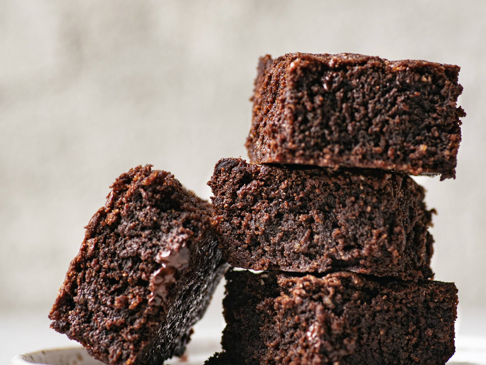

Brownies!

Acompañados con helado de crema americana quedan buenísimos.
Tiempo de preparación: 20min.
Ingredientes
- 300 gramos de chocolate amargo 60% cacao
- 200 gramos de manteca
- 500 gramos de azúcar
- 4 huevos
- 1 taza de harina
- ½ taza de fecula de maiz
Instrucciones
- Derretir en un bol a baño maría o en un microondas el chocolate con la manteca.
- En otro bol, unir el azúcar con los huevos sin batir demasiado.
- Dejar entibiar el chocolate, incorporarlo a los huevos.
- Agregar con movimientos envolventes la harina previamente tamizada con la maizena.
- Volcar en un molde de bordes altos, de 32 x 22 cm, previamente enmantecado y enharinado.
- Cocinar en el horno precalentado a temperatura de moderada a fuerte, durante 25 minutos. Al introducir un cuchillo en el centro, debe salir con migas de la preparación, no limpio del todo.
- Dejar enfriar en la fuente y luego cortar en cuadrados de 4 cm.